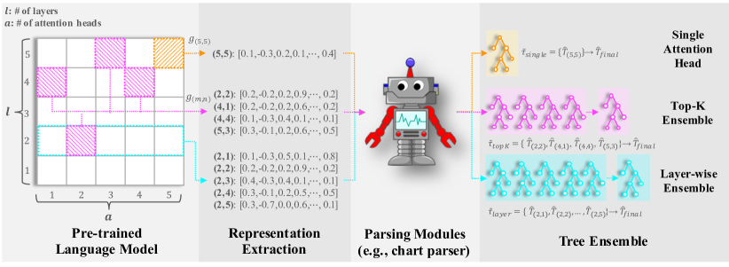

Revisiting the Practical Effectiveness of Constituency Parse Extraction from Pre-trained Language Models
COLING 2022
Taeuk Kim
한줄 요약
사전학습 언어 모델에서의 구문 분석 추출의 실용적 효과를 재검토하는 연구

Figure 1. 사전학습 언어 모델에서의 구문 분석 추출의 실용적 효과를 다양한 설정에서 체계적으로 재검토합니다.
배경
BERT와 같은 사전학습 언어 모델(PLM)이 은닉 표현에 구문 정보를 인코딩한다는 연구가 늘어나면서, 지도 학습 파싱 없이 이 표현들로부터 구문 분석 트리를 추출하는 여러 방법이 제안되었습니다. 초기 결과는 유망해 보였으나, 대부분의 평가가 제한적이고 때로는 비일관적인 실험 설정에서 수행되어, 이러한 기법이 진정으로 실용적인지 판단하기 어려웠습니다. 본 논문은 한 걸음 물러서서 PLM에서의 구문 분석 추출이 보다 광범위한 현실적 조건에서 실제로 얼마나 잘 작동하는지를 엄밀하게 재검토합니다.
방법
체계적 평가 프레임워크: 기존 연구에서 종종 비일관적이었던 변수들 — PLM 선택, 레이어 선택 전략, 스팬 점수 계산을 위한 거리 메트릭, 트리 디코딩 알고리즘 — 을 통제하는 통합 평가 프로토콜을 수립합니다.
광범위한 실험 범위: 다수의 PLM(BERT, RoBERTa, XLNet 등), 다양한 레이어 집계 전략(단일 레이어, 레이어 평균, 학습된 결합), 그리고 서로 다른 차트 기반 디코딩 방법을 동일한 조건에서 비교합니다.
실용성 스트레스 테스트: 표준 PTB 평가를 넘어 도메인 외 데이터, 다양한 문장 길이, 다양한 트리 깊이에서 테스트하여 실제 배포 조건을 더 잘 반영하는 견고성을 평가합니다.
결과
선택에 민감한 성능: PLM, 사용 레이어, 디코딩 방법에 따라 파싱 품질이 극적으로 변합니다. 이전에 보고된 일부 강력한 결과가 통제된 설정에서 재현되지 않아, 세부 구현 사항이 결과에 크게 영향을 미침을 보여줍니다.
지도 학습 파서와의 큰 격차: 최상의 추출 구성에서도 지도 학습 구문 분석기에 크게 미치지 못하여, PLM 기반 추출이 아직 하류 응용에서 학습된 파서의 실용적 대안이 아님을 나타냅니다.
견고성 문제: 긴 문장과 도메인 외 텍스트에서 성능이 눈에 띄게 저하되어 실제 사용의 실용적 한계를 부각합니다.
실행 가능한 권고사항: 어떤 PLM-레이어-디코더 조합이 가장 잘 작동하는지, 추출 방법이 유용한 경우(예: 저자원 환경에서의 저비용 근사)에 대한 구체적 지침을 제공합니다.
의의
본 논문은 PLM에서의 비지도 구문 분석 분야에 대한 중요한 현실 점검 역할을 합니다. 기존 문헌에서 부재했던 엄밀하고 통제된 비교를 제공함으로써, 이러한 방법이 실제로 무엇을 할 수 있고 무엇을 할 수 없는지를 명확히 합니다. 연구자들이 지나치게 낙관적인 결론을 피하고, 추출 기반 파싱이 실용적으로 가능해지기 위해 해결해야 할 진정한 병목 — 문장 길이와 도메인 이동에 대한 견고성 등 — 에 노력을 재집중하도록 돕습니다.